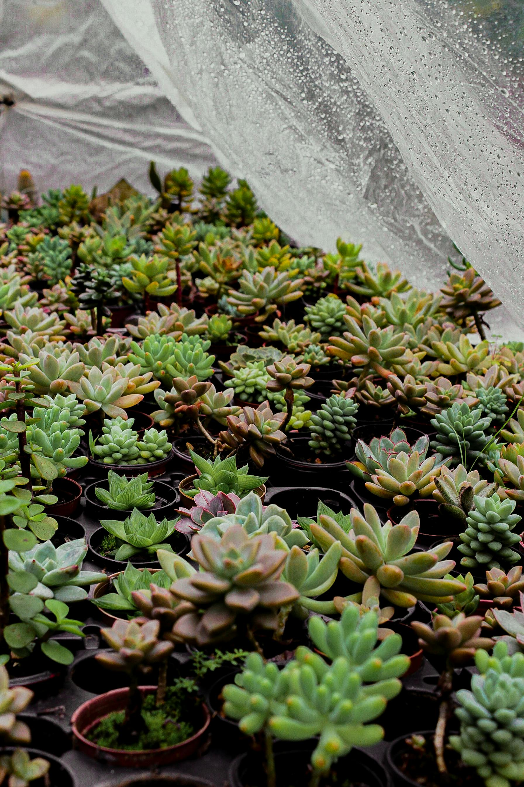
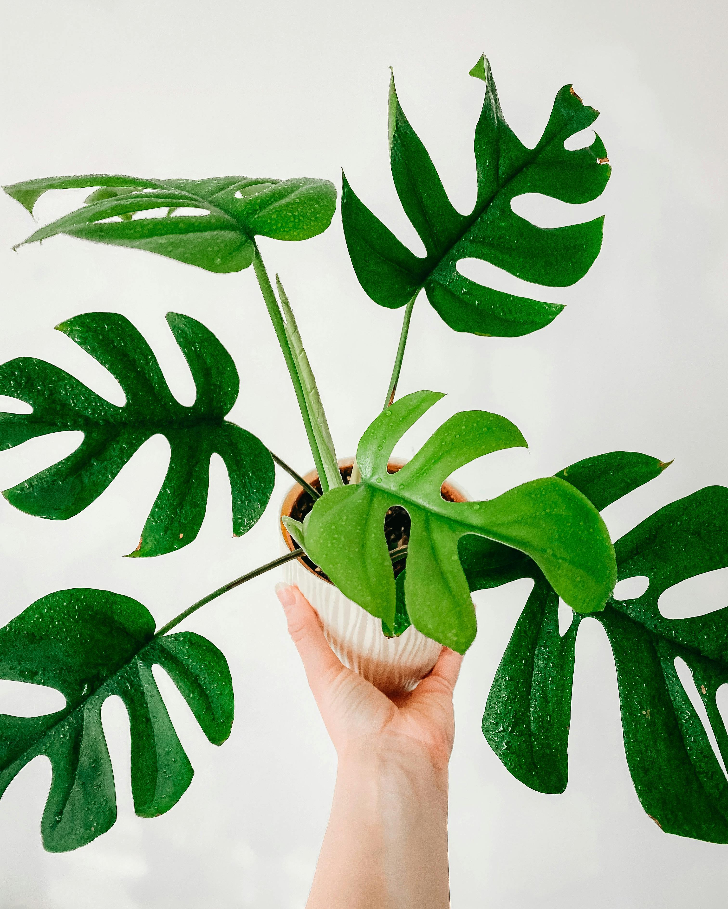
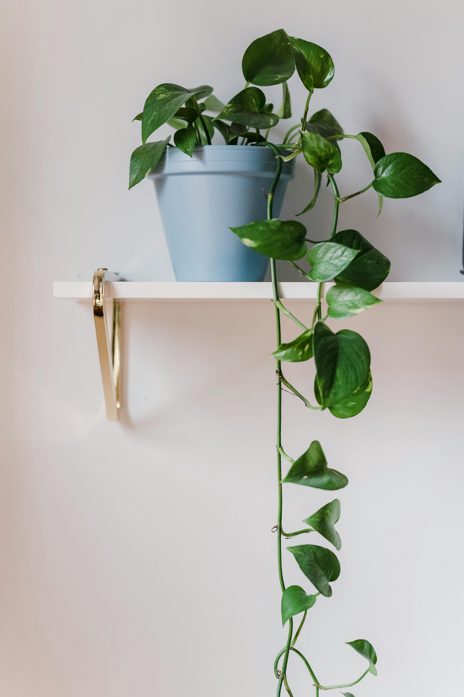

Sansevieria
También conocida como lengua de suegra, es una planta que necesita poco riego y puede adaptarse a diferentes condiciones de luz.

Suculentas
Aunque necesitan mucha luz, nunca someteremos a las suculentas al sol directo y mucho menos en verano.

Monstera
Mantenerse en lugares luminosos para su crecimiento, sin sol directo ya que sus hojas cambian de verde a amarillo.

Pothus
Riega una vez a la semana o cuando la tierra esté seca. Asegúrate de que el sustrato tenga buen drenaje para prevenir que se pudra.